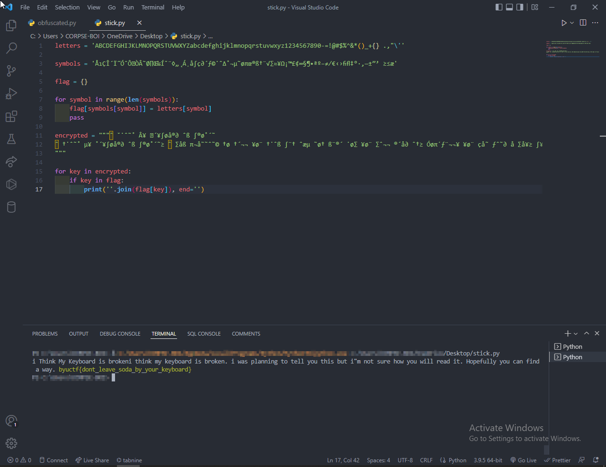
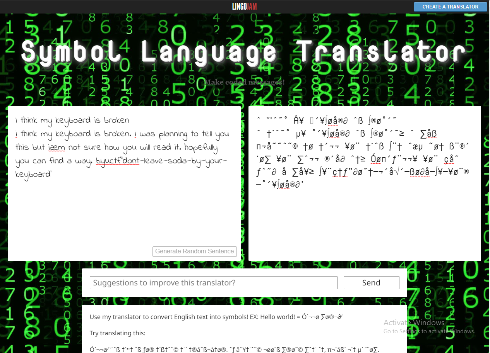

Category: Forensics
Level: HardChallenge
I just got this email from my friend. I think he was trying to tell me something important, but it just looks like random symbols.
Subject: ˆ ˇ˙ˆ˜˚ Â¥ ´¥∫øå®∂ ˆß ∫®ø˚´˜
Contents: ˆ †˙ˆ˜˚ µ¥ ˚´¥∫øå®∂ ˆß ∫®ø˚´˜≥ ˆ ∑åß π¬å˜˜ˆ˜© †ø †´¬¬ ¥ø¨ †˙ˆß ∫¨† ˆæµ ˜ø† ߨ®´ ˙ø∑ ¥ø¨ ∑ˆ¬¬ ®´å∂ ˆ†≥ Óøπ´ƒ¨¬¬¥ ¥ø¨ çå˜ ƒˆ˜∂ å ∑å¥≥ ∫¥¨ç†ƒ”∂ø˜†—¬´å√´—ßø∂å—∫¥—¥ø¨®—˚´¥∫øå®∂’
Solution #1
For the first time I realized that is something
called [alt code]
.[reference](https://scratch.mit.edu/discuss/m/topic/19568/) doing
some research i decided to make a dictionary with all
letters/specialchars & alt codes and symbols and loop on them with the symbols given,
so i made a small python script to automate this process >>.

letters = 'ABCDEFGHIJKLMNOPQRSTUVWXYZabcdefghijklmnopqrstuvwxyz1234567890-=!@#$%^&*()_+{} .,"'
symbols = 'ÅıÇÎ´Ï˝ÓˆÔÒ˜Ø∏Œ‰Íˇ¨◊„˛Á¸å∫ç∂´ƒ©˙ˆ∆˚¬µ˜øπœ®ß†¨√∑≈¥Ω¡™£¢∞§¶•ªº–≠⁄€‹›fifl‡°·‚—±”’ ≥≤æ'
flag = {}
for symbol in range(len(symbols)):
flag[symbols[symbol]] = letters[symbol]
pass
encrypted_message = """
ˆ ˇ˙ˆ˜˚ Â¥ ´¥∫øå®∂ ˆß ∫®ø˚´˜
ˆ †˙ˆ˜˚ µ¥ ˚´¥∫øå®∂ ˆß ∫®ø˚´˜≥ ˆ ∑åß π¬å˜˜ˆ˜© †ø †´¬¬ ¥ø¨ †˙ˆß ∫¨† ˆæµ ˜ø† ߨ®´ ˙ø∑ ¥ø¨ ∑ˆ¬¬ ®´å∂ ˆ†≥ Óøπ´ƒ¨¬¬¥ ¥ø¨ çå˜ ƒˆ˜∂ å ∑å¥≥ ∫¥¨ç†ƒ”∂ø˜†—¬´å√´—ßø∂å—∫¥—¥ø¨®—˚´¥∫øå®∂’
"""
for key in encrypted_message:
if key in flag:
print(''.join(flag[key]), end='')
# FLAG: byuctf{dont_leave_soda_by_your_keyboard}
Soluation #2
you can easily search for symbols translator,[https://lingojam.com/SymbolLanguageTranslator]
and put the given symbols and the site will return the flag simply >>
